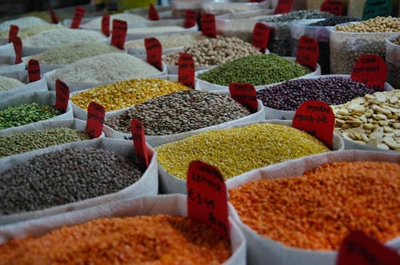
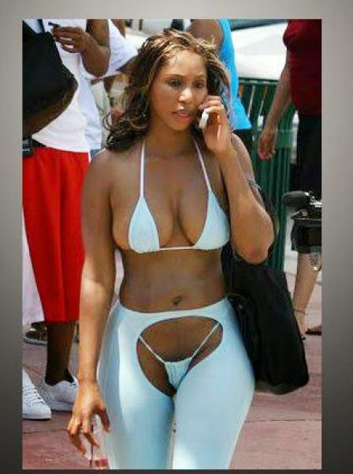
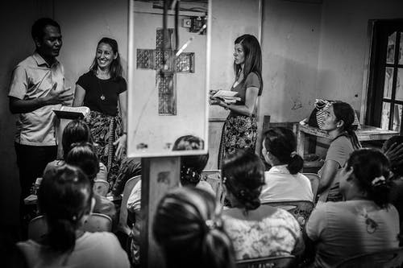
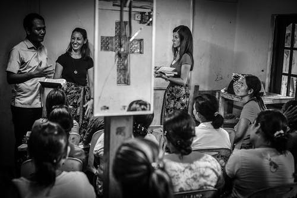

Coping up with new and different cultures can be a great challenge to many but adapting to them becomes the new normal. Colonialists came with both positive and negative impacts to our black society. Formacy by the whites during colonialism taught africans how to interact with each other in a more formal manner for better understanding of one another. This has helped a lot in enabling an environment for blacks to stand a chance in white collar jobs.Inheritance of formacy and literacy. Food is also another great culture that we as africans adopted from both the western and the colonial cultures.Maize,millet and sorghum being the main inheritance from the western cultures and sea foods from the colonial culture. Such cultures became part and parcel of our healthy lives.
Colorism is the favorism of a lighter skinned person against a darker skin.The colonialists enslaved the black to work in the fields while the lighter skinned people were allowed to work in better places,for example in the houses. This with time became a 'disease' in the society where we see light skinned family members being treated better than the darker ones. Therefore, the inheritance of colorism from the colonial cultures.In the western culture,women seem to be more affected. This is the gender that loves so much keeping up with new trends. Dressing code has been one of the most inherited culture for the longest time from the western culture. Both men and women have borrowed so many dressing behaviours from that side which tend to 'upset' the society due to regards to them as 'indecent'. This in turn is not the case to them,it is fashionable!
One way in which we can correct these non-progressive structures is by educating our society on the importance of equality.Letting them that black is just a color and the same blood flows both in the black and white will greatly help curb this problem of colorism in our society. Setting examples by giving equal opportunities to each 'color' is also an important role in the understanding of the 'evil' in colorism.Another way is by creating awareness now and then to the public on how decent dressing is important to the society.The adoption of the slogan My dress my choice broke so many christian values and created a 'don't care' attitude to our youths and some adults. Although this might be very challenging to curb, taking that initiative is very important and will also help alot in promoting a decent and respectful society.
 
